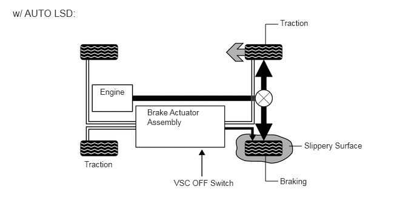
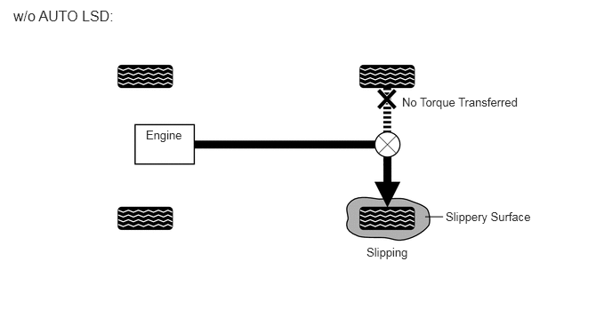

| Last Modified: 10-07-2025 | 6.11:8.1.0 | Doc ID: NM100000002GOKK |
| Model Year Start: 2024 | Model: Tacoma | Prod Date Range: [12/2023 - ] |
| Title: BRAKE CONTROL / DYNAMIC CONTROL SYSTEMS: BRAKE CONTROL SYSTEM (for Gasoline Model): AUTO LSD; 2024 - 2026 MY Tacoma [12/2023 - ] | ||
AUTO LSD
SYSTEM CONTROL
(a) Briefly pressing the VSC OFF switch in Normal Mode allows the AUTO LSD to operate (AUTO LSD Mode is selected). The AUTO LSD achieves the LSD effect by regulating the hydraulic pressure that acts on the drive wheels.
(b) TRAC enhances the start-off performance of the vehicle during low-grip surface conditions, such as snow or mud, by restricting the acceleration effort during a start-off, in order to help prevent the wheels from spinning.
(c) The AUTO LSD enhances the acceleration effort, in order to apply greater drive torque to the wheel that has grip. Thus, this function enables the vehicle to get unstuck if a wheel loses its grip, and enhances the vehicle's start-off performance when high-resistance surface conditions exist, such as loose gravel or sand.
 